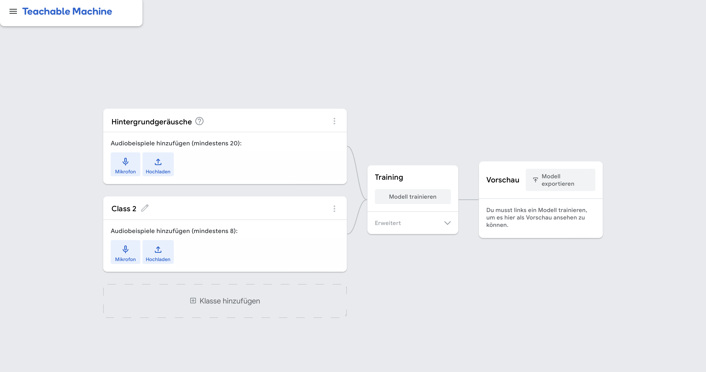
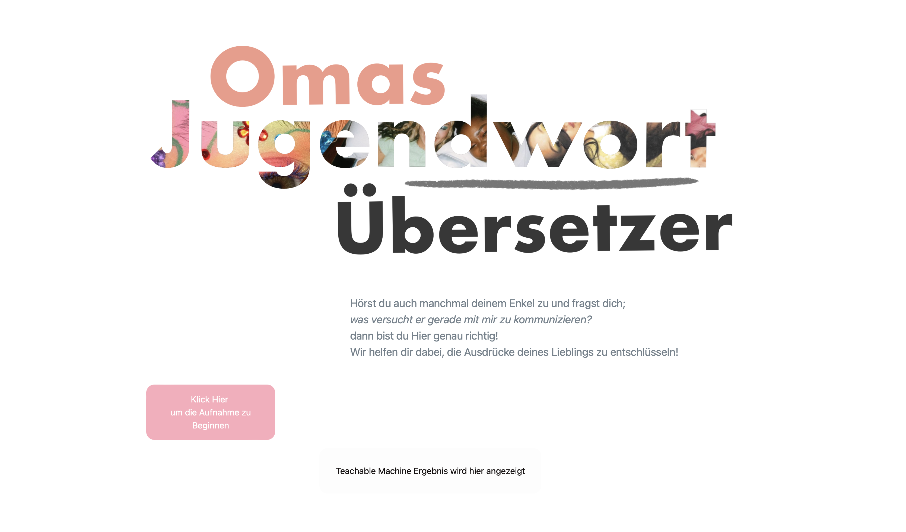

Topic
In the first project of the semester, the focus was gaining an insight into the basic concepts of training AI through the tool “Google Teachable Machine”.
understanding your grandkids has never been easier!
click here to get to the website

In the first project of the semester, the focus was gaining an insight into the basic concepts of training AI through the tool “Google Teachable Machine”.
Creating an input/output concept is initially crucial when working with Google Teachable Machine.
The collection of audio samples allows the tool to identify sounds.
A sound recognition tool was developed with the goal of identifying and translating modern language or slang. The primary objective was to bridge the communication gap between different generations by translating contemporary youth slang into more widely understood language. This tool, if further refined, could prove useful to various groups, including educators, parents, and individuals interested in staying informed about evolving linguistic trends. To focus the project's scope, the translator was tailored specifically for a personal use case, designed for communication with an elderly family member. The slang terms incorporated into the tool were selected based on their frequent use in the developer's everyday speech.
The project began with the creation of a word overview and a basic website wireframe using Figma. The next phase involved gathering a diverse collection of audio clips featuring different slang terms. The process of repeatedly recording terms such as “digger,” “safe,” and “cringe” provided insights into the impact of slight variations in pronunciation and emphasis. These variations proved beneficial in training the model, highlighting the importance of consistency in the recording environment. To maintain such consistency, a classroom was selected as the designated setting, as changing environments during recording sessions can confuse the AI during sound recognition. Using Google Teachable Machine, the collected audio clips were uploaded and labeled with their respective translations. The platform’s intuitive interface facilitated the creation and training of a sound recognition model.
The tool was implemented into an easily accessible interface design
Frequently used youth slang words were identified and collected.
As AI increasingly permeates various aspects of life, gaining a deeper understanding of how it functions and can be trained is becoming crucial for optimizing its use. This knowledge empowers individuals to leverage AI more effectively while also fostering a critical awareness of its capabilities and limitations. Engaging with practical tools such as Google Teachable Machine offers a hands-on opportunity to explore AI training, bridging the gap between theoretical knowledge and real-world applications. This approach not only aligns with individual interests but also holds the potential to benefit a broader audience. While the process of working with AI may sometimes lead to frustration due to inaccurate results, it highlights the value of focusing on the learning process rather than striving for immediate perfection. Such experiences contribute significantly to building a robust understanding of AI, as the emphasis shifts to learning how to train and work with the technology effectively. Furthermore, understanding the intricacies of AI training helps to demystify the technology, making it more approachable and less intimidating. This, in turn, can encourage wider participation in AI exploration and innovation, potentially driving more diverse and inclusive advancements in the field.